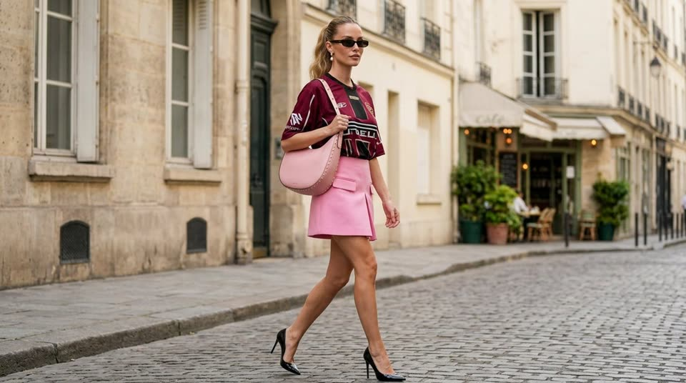

Parisian street style
WRD-022WardrobeNano Banana 2by dreamy digital arts (@dreamydigiarts)2026-10-02

Stylish European woman in Parisian street style walking a cobbled street.
Prompt
A stylish European woman with fair, glowing skin and sharp refined facial features, wavy blonde hair styled in a sleek high ponytail, wearing small dark rectangular sunglasses and elegant pearl drop earrings. She wears an short burgundy graphic streetwear jersey with bold black, white, and subtle gold graphic details, paired with a high-waisted pink tailored mini skirt with a structured silhouette. She completes the outfit with black pointed-toe stiletto heels and carries a baby-pink smooth leather hobo shoulder bag decorated with small gold dome studs, hanging naturally from her shoulder. Confident fashionable pose, sophisticated European street-style aesthetic, realistic skin texture, natural makeup, luxury fashion editorial photography, full-body composition, daylight, elegant European city architecture in the background, cinematic lighting, photorealistic, highly detailed,
Tags: street style, Paris